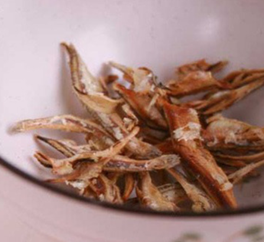
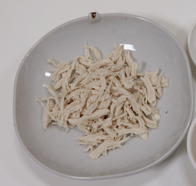

내 반려견을 위한
특별 레시피
------------------------------------------------------------
*무염 멸치

재료 : 멸치
< 만드는 방법 >
1. 멸치 머리와 내장을 제거 후, 멸치를 반으로 갈라서 물어 넣어둔다.
2. 팔팔 끓는 물에 멸치를 삶아주는 작업으로 멸치의 염분을 뺀다.
3. 멸치의 물기를 뺴주고 물에 헹궈준다.
4. 전자레인지 1-2분 돌려서 빠삭하게 한면 끝!
------------------------------------------------------------
* 닭가슴살

재료 : 닭가슴살, 우유
< 만드는 방법 >
1. 비린내를 없애기 위해 우유에 담가놓는다.
2. 3-5분정도 끓는 물에 익힌다.
3. 쪼개서 2-3시간 말린다.
4. 냉장 보관하면 끝!
------------------------------------------------------------